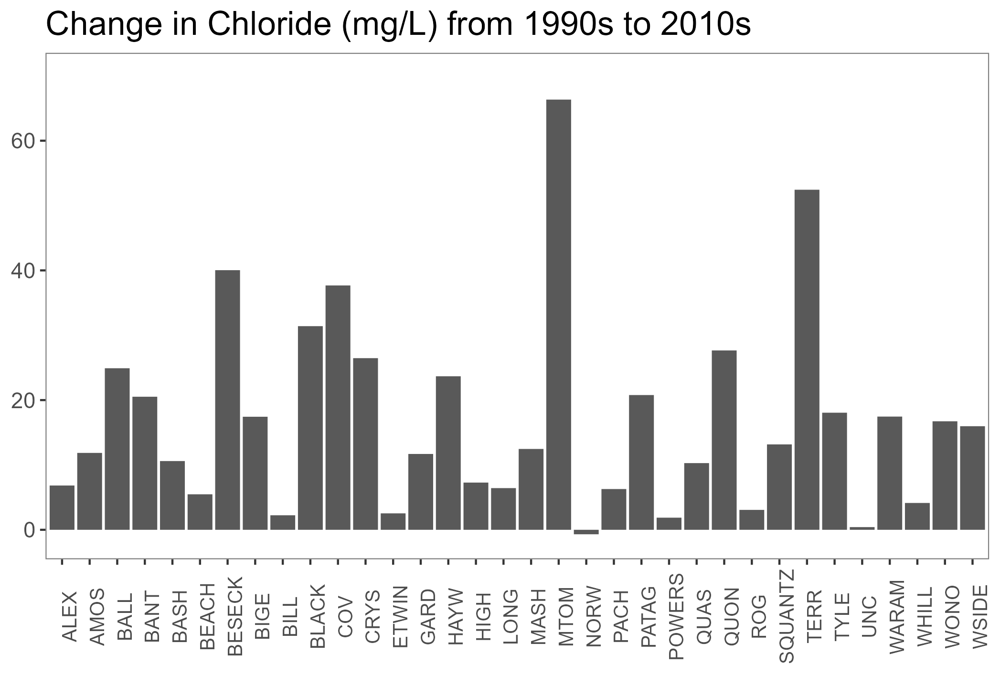
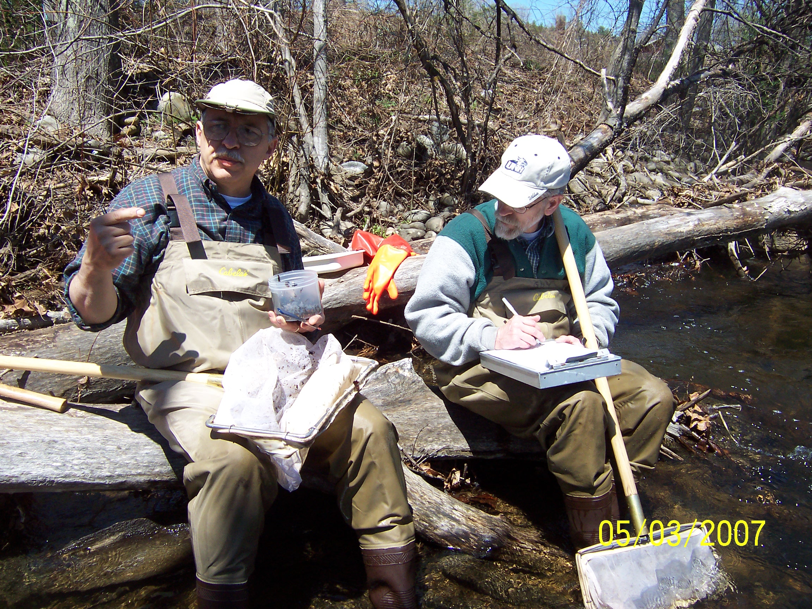

Statewide Lake Basin Characteristics
Statewide Lake Drainage Basin Land Cover
Statewide Lake Buffer (90 M) Land Cover
30-Year (1985 - 2015) Statewide Lake Basin Change
30-Year (1985 - 2015) Statewide Lake Shoreline Change
Synoptic Lake Surveys 1930's, 1970's, 1990's & 2010's

Synoptic Lake Surveys 1970's, 1990's & 2010's

Historical Assessments
Management-Driven with focus on the stressors, not the response
Biological Assessments
'If you want to know if the aquatic life is impaired, sample the aquatic life'
Biologically-Based Lake Assessments
Science-Driven with focus on the response of stressors
Biological Assemblages in Lakes
Study Plan - Profile and Water Chemistry
Study Plan - Sediment Cores
Study Plan - Algae Tows & IDs
Study Plan - Land Cover Change - 1934 to Present

Sediment Sampling Method
Method modification of procedures used in National Lake Assessments 2007, 2012 & 2017
Year 1 (2022)
Exploratory Analysis
19 Sites
Land Cover 2016 1 M resolution
Trophic Category
Trophic Category Based on Summer Chemistry Data
Sediment Core Dating
Taxa Richness - 600 Valve Count

Occurrence & Frequency - 369 Unique Taxa
Dissimilarity Between Top & Bottom Core
Non-Metric Multi-Dimensional Scaling
Dixit Et Al. 1999 - Sediment Diatom Inference
Indicator Species Analysis - Trophic Category - Eutrophic Indicator Taxa
Images from diatoms.org
Indicator Species Analysis - Trophic Category
Acknowledgements
References
Add refs
Questions / Comments?
Mary Becker, mary.becker@ct.gov
Tracy Lizotte, tracy.lizotte@ct.gov